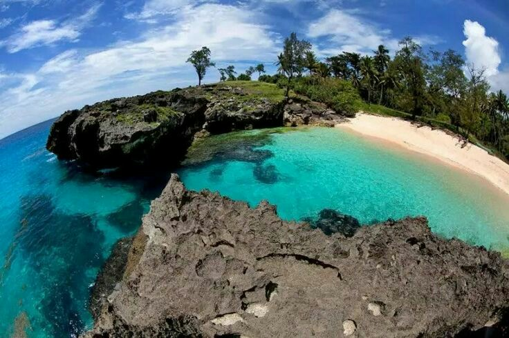

Pantai Mandorak
Deskripsi
Pantai Mandorak adalah sebuah pantai yang indah di Daerah Sumba.
Pantai ini memiliki pasir putih bersih dan berkilau seperti mutiara. Karena keindahan yang dimilikinya, Anda akan betah untuk berlama-lama di pantai ini.
Gelombang pantai yang sangat kuat merupakan salah satu ciri pantai di pesisir selatan Sumba. Gelombangnya cukup besar namun relatif aman, sehingga pantai
ini juga terkenal bagi banyak peselancar internasional. Mereka memilih datang ke Pantai Mandorak karena ketenangannya terutama bila dibandingkan dengan pantai di Bali dan Lombok.
Jika Anda mengunjungi Pantai Mandorak, Anda pasti akan menyukainya. Tebing-tebing tinggi menjadi latar belakang dan warna pirus air mendominasi pantai. Selain itu, ada air terjun yang bisa digunakan
untuk mandi. Pasir putih tampak begitu jernih dan pemandangan di sekitar pantai terlihat begitu indah. Sayangnya, meski pantainya memiliki panorama yang indah,
namun masih banyak orang tidak tahu banyak tentang Pantai Mandorak. Di pantai ini, penduduk setempat biasanya menyandarkan kapalnya setelah seharian menangkap ikan di laut.
Mereka bekerja sama dengan menarik perahu ke area aman dari gelombang pasang. Setiap orang yang mengunjungi pantai akan setuju untuk menganggap bahwa Mandorak sebagai surga tersembunyi kecil.